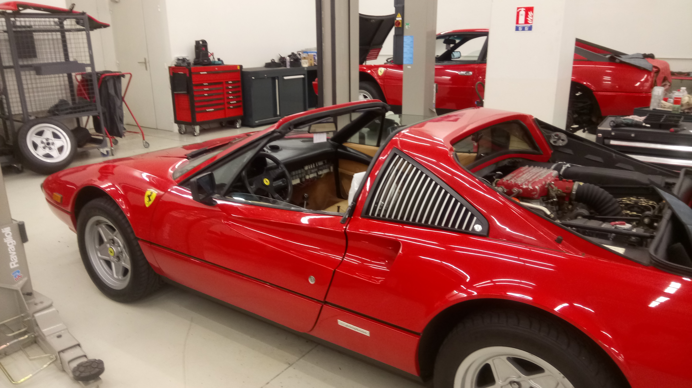
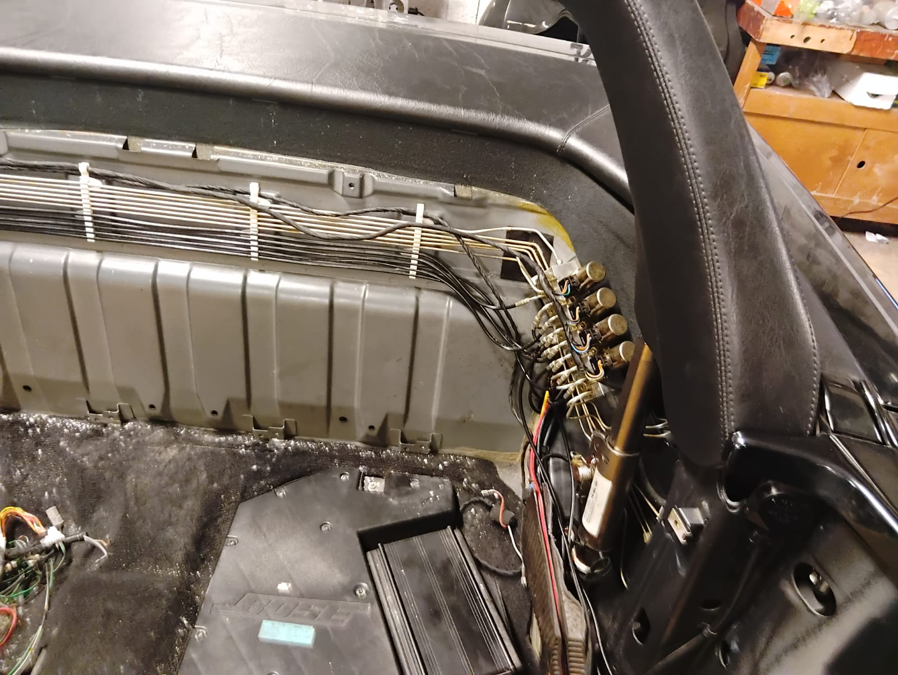
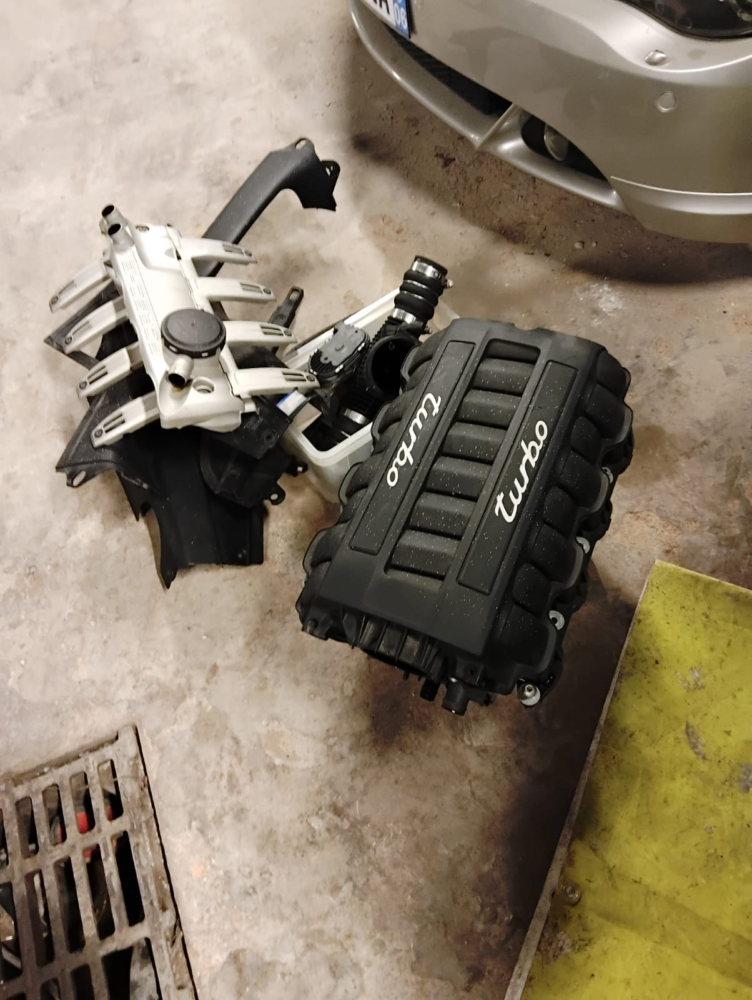
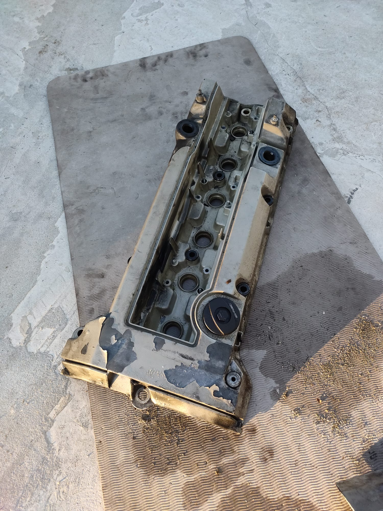
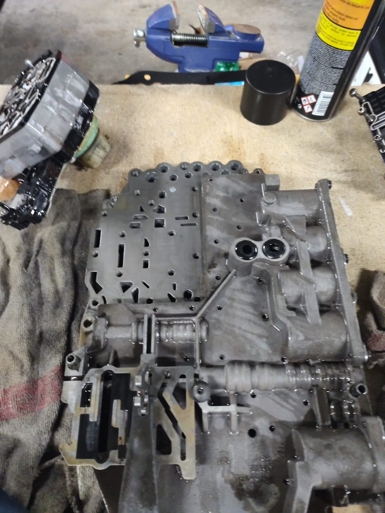
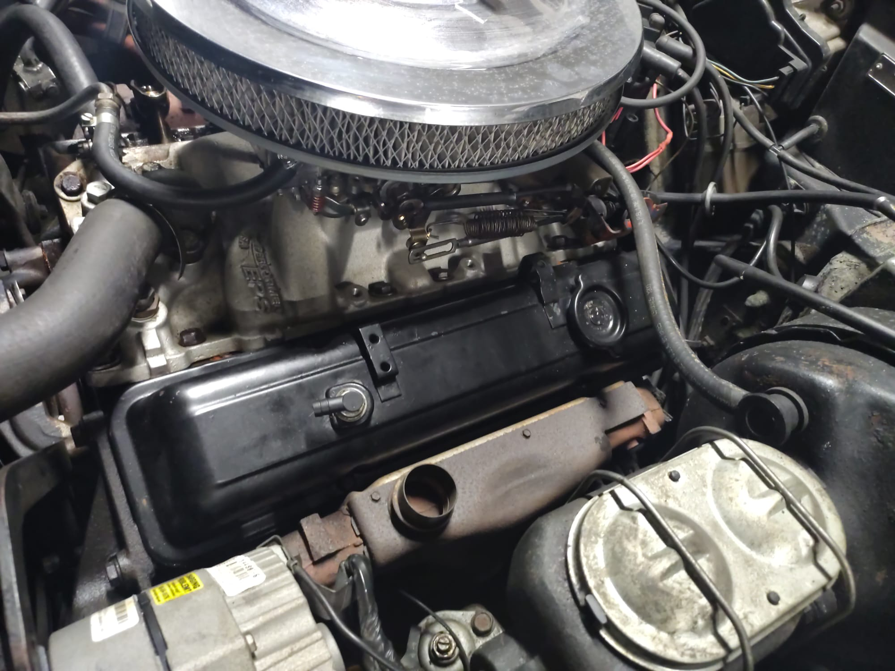

Atelier privé • Sur rendez-vousPrivate workshop • By appointment
Préserver l’âme des icônes.Preserving the soul of legends.
Iconic GT est un atelier privé dédié à la maintenance, la fiabilisation et la restauration de véhicules de prestige et youngtimers. Accueil exclusivement sur rendez-vous, après validation de la demande.
Iconic GT is a private workshop dedicated to maintenance, reliability work and restoration of prestige and youngtimer vehicles. Visits are strictly by appointment, after request validation.
Demander un rendez-vousRequest an appointment
Voir les expertisesView expertise
Découvrir l’équipeMeet the team
DiagnosticDiagnostics
HydrauliqueHydraulics
MécaniqueMechanical
ÉlectriqueElectrical
PPI / Pré-achatPPI / Pre-purchase
Ce que nous faisonsWhat we do
Méthode, exigence, traçabilitéProcess, standards, traceability
Diagnostic & fiabilisationDiagnostics & reliability
Approche orientée causes racines, points de contrôle et recommandations priorisées.Root-cause approach, checkpoints and prioritized recommendations.
Restauration cibléeTargeted restoration
Interventions documentées (photos, étapes, contrôle qualité) selon les besoins.Documented interventions (photos, steps, QC) depending on scope.
Pré-inspection (PPI)Pre‑purchase inspection (PPI)
Rapport technique avant achat : risques, priorités, estimation de remise à niveau.Technical report before purchase: risks, priorities, and estimated catch‑up work.

Vue atelier — réception uniquement sur confirmation.Workshop view — reception strictly by confirmation.
Interventions récentesRecent work
Exemples : capote Mercedes R129 (hydraulique/électrique), mécanique Porsche Cayenne Turbo, transmission Mercedes W140, réfection moteur AMG, restauration Corvette C3.
Examples: Mercedes R129 roof system (hydraulics/electrics), Porsche Cayenne Turbo engine work, Mercedes W140 transmission, AMG engine work, Corvette C3 restoration.
GalerieGallery
Cliquer pour zoomerClick to zoom

Mercedes R129 — capote

Cayenne Turbo — mécanique

Mercedes C36 AMG — moteur

Mercedes W140 — boîte

Corvette C3 — restauration

Jeep — diagnostic